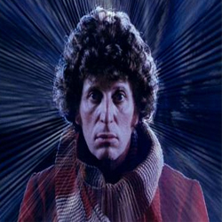

| Home | The Doctors | The Companions | The Villains |
| [banner] | |||
| cf
The Fourth Doctor The Fourth Doctor is an incarnation of the Doctor, the protagonist of the BBC science fiction television series Doctor Who. He was portrayed by Tom Baker for seven consecutive seasons and remains the longest-lived incarnation of the Doctor in the show's on-screen history, counting both the classic and modern series. Further to this, he is considered to be the most recognisable and iconic incarnation of the Doctor both in the United Kingdom and internationally. Within the series' narrative, the Doctor is a centuries-old Time Lord alien from the planet Gallifrey who travels in time and space in his TARDIS, frequently with companions. When the Doctor is critically injured, he can regenerate his body, changing his physical appearance and personality in the process. Baker portrays the fourth such incarnation, a whimsical and sometimes brooding individual whose enormous personal warmth is at times tempered by his capacity for righteous anger. His initial companion was intrepid journalist Sarah Jane Smith (Elisabeth Sladen), who had travelled alongside him in his previous incarnation, and she is later joined by surgeon Harry Sullivan (Ian Marter). His later companions included robotic dog K-9, savage alien warriorLeela (Louise Jameson), female Time Lord Romana (Mary Tamm and Lalla Ward), alien aristocrat Nyssa (Sarah Sutton), boy genius Adric (Matthew Waterhouse) and Australian flight attendant Tegan (Janet Fielding). From witnessing the genesis of the Daleks to preventing the death of the universe at Logopolis, the Fourth Doctor was an adventurer on an epic scale. Armed with a gleeful smile, swashbuckling charm and righteous morality, he defeated Sontarans, ancient vampires and the Black Guardian.
|